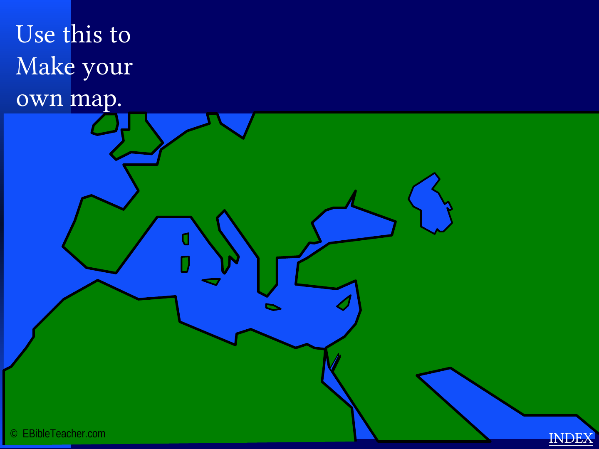

Ephesus
A church commended for endurance but warned about abandoning its first love.
The source explicitly lists Pergamum, Thyatira, Sardis, Smyrna, Philadelphia, Ephesus and Laodicea. This page preserves that set and gives concise study summaries.

A church commended for endurance but warned about abandoning its first love.
A church encouraged in suffering and faithfulness.
A church living amid pressure and doctrinal compromise.
A church with love and service, but serious tolerance issues.
A church with a reputation for life yet spiritually warned to wake up.
A church encouraged for faithfulness despite limited strength.
A church strongly challenged over lukewarmness and self-sufficiency.